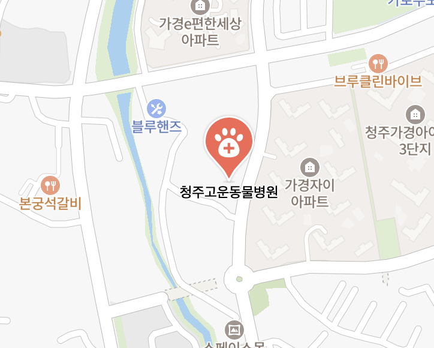
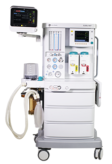

<!DOCTYPE html>
<html lang="ko">
<head>
    <meta charset="UTF-8">
    <meta name="viewport" content="width=device-width, initial-scale=1.0">
    <title>청주 고운 동물병원</title>
    <!-- Tailwind CSS -->
    <script src="https://cdn.tailwindcss.com"></script>
    <!-- React & Babel -->
    <script src="https://unpkg.com/react@18/umd/react.development.js"></script>
    <script src="https://unpkg.com/react-dom@18/umd/react-dom.development.js"></script>
    <script src="https://unpkg.com/@babel/standalone/babel.min.js"></script>
    <!-- Fonts -->
    <link rel="preconnect" href="https://fonts.googleapis.com">
    <link rel="preconnect" href="https://fonts.gstatic.com" crossorigin>
    <link href="https://fonts.googleapis.com/css2?family=Noto+Sans+KR:wght@300;400;500;700&display=swap" rel="stylesheet">
    <!-- Swiper.js -->
    <link rel="stylesheet" href="https://cdn.jsdelivr.net/npm/swiper@11/swiper-bundle.min.css" />
    <script src="https://cdn.jsdelivr.net/npm/swiper@11/swiper-bundle.min.js"></script>
    <script src="https://unpkg.com/lucide@latest"></script>

    <script>
        tailwind.config = {
            theme: {
                extend: {
                    colors: {
                        brand: '#4d4734',
                        brandDark: '#333333',
                        brandLight: '#F0EBE3',
                        neutralBg: '#F9F7F2',
                    }
                }
            }
        }
    </script>

    <style>
        body { font-family: 'Noto Sans KR', sans-serif; scroll-behavior: smooth; background-color: #fff; overflow-x: hidden; }
        .main-swiper { width: 100%; height: 85vh; }
        .swiper-slide { background-size: cover; background-position: center; display: flex; justify-content: center; align-items: center; }
        .slide-text { opacity: 0; transform: translateY(30px); transition: opacity 0.8s ease-out, transform 0.8s ease-out; }
        .swiper-slide-active .slide-text { opacity: 1; transform: translateY(0); transition-delay: 0.5s; }
        .swiper-button-next, .swiper-button-prev { color: white !important; }
        .swiper-pagination-bullet-active { background: white !important; }
        
        @keyframes fadeIn { from { opacity: 0; transform: translateY(15px); } to { opacity: 1; transform: translateY(0); } }
        .animate-fade-in { animation: fadeIn 0.6s ease-out forwards; }
        
        .nav-link { position: relative; }
        .nav-link::after { content: ''; position: absolute; width: 0; height: 2px; bottom: -4px; left: 0; background-color: #17371D; transition: width 0.3s ease; }
        .nav-link:hover::after { width: 100%; }
        
        .specialty-card { transition: all 0.4s cubic-bezier(0.4, 0, 0.2, 1); }
        .specialty-card:hover { transform: translateY(-8px); box-shadow: 0 20px 30px -10px rgba(0, 0, 0, 0.1); }

        .process-step::before {
            content: ''; position: absolute; top: 50%; left: -1rem; width: 2px; height: 100%; background-color: #E8EDE9; z-index: -1;
        }
        @media (min-width: 768px) {
            .process-step::before { top: 2rem; left: 50%; width: 100%; height: 2px; }
        }
        .checkup-table th, .checkup-table td { border: 1px solid #E8EDE9; padding: 1rem; }

        .sns-button { transition: all 0.3s ease; }
        .sns-button:hover { transform: scale(1.05); }
    </style>
</head>
<body>
    <div id="root"></div>

    <script type="text/babel">
        const { useState, useEffect } = React;

        // --- 1. Global UI & Header/Footer ---

        function Header({ onNavigate, isMobileMenuOpen, setMobileMenuOpen }) {
            // 대메뉴 클릭 시 연결될 맵핑 정보
            const mainMenuMapping = {
                '병원소개': '인사말',
                '피부과 진료': '진단검사',
                '치과진료': '구강검진(COHAT)',
                '건강검진': '건강검진에 대하여',
                'SNS': 'SNS'
            };

            const menuItems = {
                '병원소개': ['인사말', '의료진소개', '시설안내', '장비소개','진료비용 안내', '오시는길 및 진료시간'],
                '피부과 진료': ['진단검사', '주요 피부질환', '레이저 클리닉'],
                '치과진료': ['구강검진(COHAT)', '안전한 마취를 위한 선택', '주요 치과 질환'],
                '건강검진': ['건강검진에 대하여', '건강검진 프로그램'],
                'SNS': [] // SNS는 대메뉴 클릭 시 전용 페이지로 이동
            };

            const [openDesktopMenu, setOpenDesktopMenu] = useState(null);

            return (
                <header className="bg-white/95 backdrop-blur-md shadow-sm fixed top-0 left-0 right-0 z-[100]">
                    <div className="container mx-auto px-6 h-20 flex justify-between items-center">
                        <a href="#" onClick={(e) => { e.preventDefault(); onNavigate('main'); }} className="flex items-center group">
                            <div className="w-10 h-10 bg-brand text-white flex items-center justify-center text-sm rounded-lg font-bold mr-2 shadow-md group-hover:bg-brandDark transition-colors">고운</div>
                            <span className="text-xl font-bold text-brandDark tracking-tight font-bold">청주 고운 동물병원</span>
                        </a>
                        <nav className="hidden lg:block">
                            <ul className="flex items-center space-x-8">
                                {Object.entries(menuItems).map(([title, children]) => (
                                    <li key={title} className="relative py-6" onMouseEnter={() => setOpenDesktopMenu(title)} onMouseLeave={() => setOpenDesktopMenu(null)}>
                                        <a href="#" 
                                           onClick={(e) => { e.preventDefault(); onNavigate(mainMenuMapping[title]); }}
                                           className="nav-link font-medium text-gray-600 hover:text-brand transition-colors">{title}</a>
                                        {openDesktopMenu === title && children.length > 0 && (
                                            <div className="absolute top-full left-1/2 -translate-x-1/2 w-48 bg-white shadow-2xl rounded-b-xl border-t-2 border-brand py-2 animate-fade-in">
                                                {children.map((item, idx) => (
                                                    <a key={idx} href="#" 
                                                       onClick={(e) => { e.preventDefault(); onNavigate(item); setOpenDesktopMenu(null); }} 
                                                       className="block px-5 py-2.5 text-sm text-gray-500 hover:bg-brandLight hover:text-brand transition-colors">
                                                        {item}
                                                    </a>
                                                ))}
                                            </div>
                                        )}
                                    </li>
                                ))}
                            </ul>
                        </nav>
                        <button onClick={() => setMobileMenuOpen(!isMobileMenuOpen)} className="lg:hidden text-gray-600 outline-none">
                            <svg className="w-7 h-7" fill="none" stroke="currentColor" viewBox="0 0 24 24"><path strokeLinecap="round" strokeLinejoin="round" strokeWidth="2" d={isMobileMenuOpen ? "M6 18L18 6M6 6l12 12" : "M4 6h16M4 12h16m-7 6h7"}/></svg>
                        </button>
                    </div>
                    {isMobileMenuOpen && (
                        <div className="lg:hidden bg-white border-t border-gray-100 shadow-xl overflow-y-auto max-h-[80vh] animate-fade-in">
                            <ul className="px-6 py-4 text-left">
                                {Object.entries(menuItems).map(([title, children]) => (
                                    <li key={title} className="mb-4">
                                        <div className="font-bold text-brand mb-2 cursor-pointer" onClick={() => { onNavigate(mainMenuMapping[title]); setMobileMenuOpen(false); }}>{title}</div>
                                        {children.length > 0 && (
                                            <ul className="pl-4 space-y-2 border-l border-brandLight text-sm text-gray-600">
                                                {children.map((item, idx) => (
                                                    <li key={idx}><a href="#" onClick={(e) => { e.preventDefault(); onNavigate(item); setMobileMenuOpen(false); }} className="block py-1">{item}</a></li>
                                                ))}
                                            </ul>
                                        )}
                                    </li>
                                ))}
                            </ul>
                        </div>
                    )}
                </header>
            );
        }

        function Footer() {
            return (
                <footer className="bg-brandDark text-gray-400 py-16 px-6 text-sm">
                    <div className="container mx-auto grid grid-cols-1 md:grid-cols-2 gap-12 text-sm text-left">
                        <div>
                            <h3 className="text-white font-bold text-2xl mb-4 tracking-tighter">청주 고운 동물병원</h3>
                            <p className="opacity-80 break-keep leading-relaxed font-light">충북 청주시 흥덕구 서현남로 16 가경 서현플라자 205호 206호 | 대표 원장: 김창회, 정연후</p>
                            <p className="opacity-80 mt-1 font-light">진료 문의: 043-715-9942 | 사업자등록번호: 823-13-02662</p>
                        </div>
                        <div className="flex flex-col md:items-end justify-end">
                            <div className="flex space-x-4 mb-4 text-xs font-medium">
                                <a href="https://blog.naver.com/cjgoun" target="_blank" className="hover:text-white transition-colors">Blog</a>
                                <a href="https://www.instagram.com/gounanimalclinic" target="_blank" className="hover:text-white transition-colors">Instagram</a>
                                
                            </div>
                            <p className="text-xs opacity-40 font-light tracking-tight">© 2025 Cheongju Goun Animal Hospital. All Rights Reserved.</p>
                        </div>
                    </div>
                </footer>
            );
        }

        // --- 2. Page Content Components ---

        function MainVisual() {
            useEffect(() => {
                new Swiper('.main-swiper', {
                    loop: true, autoplay: { delay: 5000 }, pagination: { el: '.swiper-pagination', clickable: true },
                    navigation: { nextEl: '.swiper-button-next', prevEl: '.swiper-button-prev' }, effect: 'fade'
                });
            }, []);
            return (
                <div className="swiper main-swiper mt-0">
                    <div className="swiper-wrapper">
                        <div className="swiper-slide relative flex items-center justify-center bg-cover bg-center" style={{backgroundImage: 'url(./images/mainbackground.jpeg)'}}>
                            <div className="absolute inset-0 bg-brand/30"></div>
                            <div className="relative z-10 text-white text-center px-4 slide-text">
                                <h2 className="text-3xl md:text-5xl font-bold tracking-tight leading-tight text-white drop-shadow-md">아이들의 불편함에 <br className="md:hidden" /> 더 귀 기울이겠습니다</h2>
                                <p className="mt-4 text-lg md:text-xl font-light opacity-90 drop-shadow-sm text-white font-light">진심을 담은 정직한 진료, 고운 동물병원</p>
                            </div>
                        </div>
                    </div>
                    <div className="swiper-pagination"></div>
                </div>
            );
        }

        function SpecialtySection({ onNavigate }) {
            return (
                <section className="bg-neutralBg py-24 text-center">
                    <div className="container mx-auto px-6">
                        <h2 className="text-3xl md:text-4xl font-bold text-brand tracking-tight mb-16 underline decoration-brandLight decoration-8 underline-offset-8">고운 특화 진료 안내</h2>
                        <div className="grid grid-cols-1 md:grid-cols-2 gap-10 max-w-6xl mx-auto">
                            <div className="specialty-card bg-white rounded-[2.5rem] p-10 shadow-sm border border-gray-100 flex flex-col items-center">
                                <div className="mb-8 text-brand">
                                    <i data-lucide="hospital" className="w-16 h-16"></i>
                                </div>
                                <h3 className="text-2xl font-bold text-gray-800 mb-4 tracking-tight">고운 치과 센터</h3>
                                <p className="text-gray-500 mb-8 text-sm leading-relaxed break-keep max-w-xs text-center font-light">정밀 구강 엑스레이와 치과 특화 장비를 통해 아이들의 건강한 치아와 삶의 질을 책임집니다.</p>
                                <button onClick={() => onNavigate('구강검진(COHAT)')} className="bg-brand text-white px-10 py-3 rounded-full text-sm font-bold hover:bg-brandDark transition-all shadow-md mt-auto">자세히 보기</button>
                            </div>
                            <div className="specialty-card bg-white rounded-[2.5rem] p-10 shadow-sm border border-gray-100 flex flex-col items-center text-center">
                                <div className="mb-8 text-brand">
                                    <i data-lucide="dog" className="w-16 h-16"></i>
                                </div>
                                <h3 className="text-2xl font-bold text-gray-800 mb-4 tracking-tight">고운 피부과 클리닉</h3>
                                <p className="text-gray-500 mb-8 text-sm leading-relaxed break-keep max-w-xs text-center font-light">근본적인 원인 파악을 통한 정밀 진단. 아이들이 가려움 없는 편안한 일상을 되찾아줍니다.</p>
                                <button onClick={() => onNavigate('진단검사')} className="bg-brand text-white px-10 py-3 rounded-full text-sm font-bold hover:bg-brandDark transition-all shadow-md mt-auto">자세히 보기</button>
                            </div>
                        </div>
                    </div>
                </section>
            );
        }

        function ClinicFeatures() {
            return (
                <section className="bg-white py-24 text-center">
                    <div className="container mx-auto px-6 text-brandDark font-light">
                        <h2 className="text-3xl font-bold text-gray-800 mb-16 underline decoration-brandLight decoration-8 underline-offset-8">우리 아이들을 위한 약속</h2>
                        <div className="grid grid-cols-1 md:grid-cols-3 gap-16 text-brand">
                            <div className="flex flex-col items-center">
                                <div className="mb-6 p-5 bg-neutralBg rounded-2xl shadow-sm">
                                    <i data-lucide="heart" className="w-16 h-16"></i>
                                </div>
                                <h3 className="text-xl font-bold mb-4 tracking-tight text-brandDark text-center font-bold">섬세한 진료</h3>
                                <p className="text-gray-500 text-sm leading-relaxed max-w-xs break-keep text-center">말하지 못하는 아이들의 작은 불편함까지 헤아리기 위해 항상 마음을 다해 진료합니다.</p>
                            </div>
                            <div className="flex flex-col items-center text-center font-bold">
                                <div className="mb-6 p-5 bg-neutralBg rounded-2xl shadow-sm">
                                    <i data-lucide="graduation-cap" className="w-16 h-16"></i>
                                </div>
                                <h3 className="text-xl font-bold mb-4 tracking-tight text-brandDark">전문적인 진료</h3>
                                <p className="text-gray-500 text-sm leading-relaxed max-w-xs break-keep text-center font-light">최신 의료 지식과 기술을 끊임없이 연구하고, 정확한 진단과 최선의 치료를 제공합니다.</p>
                            </div>
                            <div className="flex flex-col items-center">
                                <div className="mb-6 p-5 bg-neutralBg rounded-2xl shadow-sm">
                                    <i data-lucide="message-circle-check" className="w-16 h-16"></i>
                                </div>
                                <h3 className="text-xl font-bold mb-4 tracking-tight text-brandDark text-center font-bold">충분한 소통</h3>
                                <p className="text-gray-500 text-sm leading-relaxed max-w-xs break-keep text-center font-light">보호자님의 궁금증과 걱정을 덜어드릴 수 있도록 진료 전 과정을 알기 쉽게 설명합니다.</p>
                            </div>
                        </div>
                    </div>
                </section>
            );
        }

        function ContactInfo() {
            return (
                <section className="bg-neutralBg py-24 border-t border-gray-100 text-brandDark">
                    <div className="container mx-auto px-6 grid grid-cols-1 lg:grid-cols-2 gap-16 items-center">
                        {/* 왼쪽: 실제 네이버 지도 영역 */}
                       {/* 왼쪽: 지도 영역 (클릭 시 네이버 지도로 이동) */}
                    <a 
                        href="https://map.naver.com/p/search/%EC%B2%AD%EC%A3%BC%EA%B3%A0%EC%9A%B4%EB%8F%99%EB%AC%BC%EB%B3%91%EC%9B%90/place/2062781011?c=14.97,0,0,0,dh&isCorrectAnswer=true&placePath=/home?from=map&fromPanelNum=1&additionalHeight=76&timestamp=202603182319&locale=ko&svcName=map_pcv5&searchText=%EC%B2%AD%EC%A3%BC%EA%B3%A0%EC%9A%B4%EB%8F%99%EB%AC%BC%EB%B3%91%EC%9B%90" 
                        target="_blank" 
                        className="w-full h-[450px] bg-neutralBg rounded-3xl overflow-hidden shadow-md relative group cursor-pointer"
                    >
                        

                        <div className="absolute inset-0 bg-black/20 group-hover:bg-black/40 transition-all flex items-center justify-center">
        <div className="px-6 py-3 bg-white/90 rounded-full text-brand font-bold shadow-lg flex items-center gap-2">
            <i data-lucide="map" className="w-5 h-5"></i>
            네이버 지도로 길찾기
        </div>
    </div>
                    </a>
                        <div className="space-y-8">
                            <h2 className="text-3xl font-bold tracking-tight text-left">오시는 길 & 진료 안내</h2>
                            <div className="space-y-4 text-gray-600">
                                <div className="flex items-start text-left font-light"><span className="font-bold text-brand w-20 flex-shrink-0 text-sm uppercase">📍 주소</span><p className="text-sm">충북 청주시 흥덕구 서현남로 16 2층 205호, 206호</p></div>
                                <div className="flex items-start text-left font-light"><span className="font-bold text-brand w-20 flex-shrink-0 text-sm uppercase">📞 전화</span><p className="text-sm">043-715-9942</p></div>
                            </div>
                            <div className="bg-white p-8 rounded-3xl shadow-sm space-y-4 border border-brandLight/20 text-left">
                                <h3 className="font-bold border-b pb-2 mb-4 tracking-tight">운영 시간</h3>
                                <div className="text-sm text-gray-600 space-y-3 font-medium">
                                    <div className="flex justify-between"><span>월 · 수 · 금 </span><span className="text-right">09:00 ~ 19:00 <br/><small className="text-gray-400 font-normal">휴게 12:00 ~ 13:30</small></span></div>
                                    <div className="flex justify-between"><span>화 · 목 (야간 진료)</span><span className="text-right font-bold text-brand">09:00 ~ 21:00 <br/><small className="text-gray-400 font-normal">휴게 12:00 ~ 13:30</small></span></div>
                                    <div className="flex justify-between"><span>토요일 · 일요일</span><span className="text-right">09:00 ~ 16:00 <br/><small className="text-gray-400 font-normal">휴게 12:00 ~ 13:00</small></span></div>
                                    <div className="flex justify-between pt-2 text-red-500 font-bold border-t"><span>공휴일</span><span>휴무</span></div>
                                </div>
                            </div>
                        </div>
                    </div>
                </section>
            );
        }

        // --- 4. Sub Page Components ---

        function MainPage({ onNavigate }) {
            return (
                <div className="animate-fade-in">
                    <MainVisual />
                    <SpecialtySection onNavigate={onNavigate} />
                    <ClinicFeatures />
                    <ContactInfo />
                </div>
            );
        }

        // --- (신규) SNS 연결 페이지 ---
        function SNSConnectPage() {
            return (
                <div className="pt-20 animate-fade-in min-h-[70vh] flex items-center justify-center bg-neutralBg">
                    <div className="container mx-auto px-6 max-w-2xl text-center">
                        <h2 className="text-brand font-bold mb-4 text-sm tracking-widest uppercase">Connect with Us</h2>
                        <h1 className="text-3xl md:text-4xl font-bold text-brandDark mb-12 tracking-tight">고운 소식을 만나보세요</h1>
                        <div className="grid grid-cols-1 sm:grid-cols-2 gap-8">
                            <a href="https://blog.naver.com/cjgoun" target="_blank" className="sns-button bg-white p-10 rounded-[2.5rem] shadow-xl border border-gray-100 flex flex-col items-center group">
                                <div className="w-20 h-20 bg-emerald-50 text-[#269449] rounded-full flex items-center justify-center mb-6 group-hover:bg-[#269449] group-hover:text-white transition-all duration-300">
                                    <svg width="40" height="40" viewBox="0 0 24 24" fill="currentColor"><path d="M24 12c0 6.627-5.373 12-12 12S0 18.627 0 12 5.373 0 12 0s12 5.373 12 12zm-8.85-4.8c-.28 0-.5.22-.5.5v7.6c0 .28.22.5.5.5h4.7c.28 0 .5-.22.5-.5v-7.6c0-.28-.22-.5-.5-.5h-4.7zm-6.8 0c-.28 0-.5.22-.5.5v7.6c0 .28.22.5.5.5h4.7c.28 0 .5-.22.5-.5v-7.6c0-.28-.22-.5-.5-.5H8.35z"/></svg>
                                </div>
                                <span className="font-bold text-xl text-brandDark mb-2">공식 블로그</span>
                                <p className="text-sm text-gray-500 font-light">다양한 진료 사례와 소식</p>
                            </a>
                            <a href="https://www.instagram.com/gounanimalclinic/" target="_blank" className="sns-button bg-white p-10 rounded-[2.5rem] shadow-xl border border-gray-100 flex flex-col items-center group">
                                <div className="w-20 h-20 bg-pink-50 text-[#bd170b] rounded-full flex items-center justify-center mb-6 group-hover:bg-[#bd170b] group-hover:text-white transition-all duration-300">
                                    <svg width="40" height="40" viewBox="0 0 24 24" fill="currentColor"><path d="M12 2.163c3.204 0 3.584.012 4.85.07 3.252.148 4.771 1.691 4.919 4.919.058 1.265.069 1.645.069 4.849 0 3.205-.012 3.584-.069 4.849-.149 3.225-1.664 4.771-4.919 4.919-1.266.058-1.644.07-4.85.07-3.204 0-3.584-.012-4.849-.07-3.26-.149-4.771-1.699-4.919-4.92-.058-1.265-.07-1.644-.07-4.849 0-3.204.013-3.583.07-4.849.149-3.227 1.664-4.771 4.919-4.919 1.266-.057 1.645-.069 4.849-.069zm0-2.163c-3.259 0-3.667.014-4.947.072-4.358.2-6.78 2.618-6.98 6.98-.059 1.281-.073 1.689-.073 4.948 0 3.259.014 3.668.072 4.948.2 4.358 2.618 6.78 6.98 6.98 1.281.058 1.689.072 4.948.072 3.259 0 3.668-.014 4.948-.072 4.354-.2 6.782-2.618 6.979-6.98.059-1.28.073-1.689.073-4.948 0-3.259-.014-3.667-.072-4.947-.196-4.354-2.617-6.78-6.979-6.98-1.281-.059-1.69-.073-4.949-.073zm0 5.838c-3.403 0-6.162 2.759-6.162 6.162s2.759 6.163 6.162 6.163 6.162-2.759 6.162-6.163-2.759-6.162-6.162-6.162zm0 10.162c-2.209 0-4-1.79-4-4 0-2.209 1.791-4 4-4s4 1.791 4 4c0 2.21-1.791 4-4 4zm6.406-11.845c-.796 0-1.441.645-1.441 1.44s.645 1.44 1.441 1.44c.795 0 1.439-.645 1.439-1.44s-.644-1.44-1.439-1.44z"/></svg>
                                </div>
                                <span className="font-bold text-xl text-brandDark mb-2">인스타그램</span>
                                <p className="text-sm text-gray-500 font-light">아이들의 일상과 병원 소식</p>
                            </a>
                        </div>
                    </div>
                </div>
            );
        }

        // --- (상세내용) 기타 서브 페이지 컴포넌트들 ---
        function GreetingsPage() {
            const values = [
                { id: 1, title: "전문성 및 특화 진료", subtitle: "Professionalism", desc: "치과 및 피부과 등 고도의 전문성이 필요한 분야에 집중하며 근거 중심의 표준화된 치료를 제공합니다.", color: "bg-brand", icon: "stethoscope" },
                { id: 2, title: "보호자와의 깊은 소통", subtitle: "Communication", desc: "보호자의 입장에서 생각하고 진료 과정 전체를 투명하게 공유하여 깊은 신뢰를 쌓아갑니다.", color: "bg-brandDark", icon: "message-square-check" },
                { id: 3, title: "끝까지 함께하는 책임감", subtitle: "Responsibility", desc: "단순한 처방을 넘어 치료 이후의 삶까지 고민하며 끝까지 책임지는 평생 주치의가 되겠습니다.", color: "bg-[#262424]", icon: "shield-plus" }
            ];
            return (
                <div className="pt-20 animate-fade-in text-center text-brandDark">
                    <section className="bg-brandLight py-24 px-6 text-brandDark">
                        <h2 className="text-brand font-bold mb-4 text-sm tracking-widest uppercase">Greetings</h2>
                        <h1 className="text-3xl md:text-5xl font-bold mb-8 tracking-tight text-center">가족의 마음으로 걷는 <br />정직한 치유의 길</h1>
                        <div className="w-12 h-1 bg-brand mx-auto mb-10 opacity-30"></div>
                        <div className="space-y-6 text-lg text-gray-600 leading-relaxed max-w-3xl mx-auto">
                                <p>안녕하세요, <strong>청주 고운 동물병원</strong>입니다. <br />우리는 반려동물이 단순한 동물을 넘어 삶을 공유하는 소중한 가족임을 누구보다 잘 알고 있습니다.</p>
                                <p>말하지 못하는 아이들의 고통을 가장 먼저 알아채는 것은 보호자님의 사랑입니다. <br />우리는 그 사랑에 보답하기 위해 <strong>보호자의 입장에서 먼저 생각</strong>하고, 과잉 진료 없는 <strong>정직하고 표준화된 치료</strong>를 최우선으로 여깁니다.</p>
                                <p>아이들의 눈높이에서 아픔을 이해하고, 보호자님께는 신뢰를 드리는 <br className="hidden md:block" />따뜻하고 믿음직한 평생 주치의가 될 것을 약속드립니다.</p>
                            </div>
                    </section>
                    <section className="py-24 bg-white px-6">
                        <div className="container mx-auto">
                            <h3 className="text-2xl font-bold mb-16 tracking-tight">우리가 지켜나갈 핵심 가치</h3>
                            <div className="grid grid-cols-1 lg:grid-cols-3 gap-12 max-w-6xl mx-auto">
                                {values.map(v => (
                                    <div key={v.id} className="flex flex-col items-center group">
                                        <div className={`value-circle w-32 h-32 ${v.color} rounded-full flex flex-col items-center justify-center text-white mb-8 border-8 border-white shadow-lg transition-transform duration-300 group-hover:scale-110`}>
                                            <i data-lucide={v.icon} className="w-10 h-10"></i>
                                        </div>
                                        <div className="bg-neutralBg p-8 rounded-3xl text-center w-full shadow-sm border border-brandLight/20">
                                            <h4 className="text-xl font-bold mb-4 tracking-tight">{v.title}</h4>
                                            <p className="text-gray-500 text-sm leading-relaxed break-keep px-4">{v.desc}</p>
                                        </div>
                                    </div>
                                ))}
                            </div>
                        </div>
                    </section>
                </div>
            );
        }

        function StaffPage() {
            const staff = [
                { name: "김창회 원장", title: "치과 원장", img: "https://placehold.co/400x500/E2E8F0/17371D?text=Director+Kim", profile: ["강원대학교 수의학과 졸업","원주 SKY동물메디컬센터 진료/치과 과장", "충청북도 동물위생시험소 북부지소 공중방역수의사" ], activities: ["International School of Veterinary Postgraduate Studies 치과 구강외과 인증의 과정 수료", "한국 수의치과협회 정회원", "British Veterinary Dental Association Member", "Veterflix 윤학영 교수 강아지 심장초음파 수료", "한국동물병원협회 노다지 교수 고양이 심장초음파 수료", "한국동물병원협회 손원균 장민 교수 마취세미나 수료"], interests: ["개별화된 마취 진통 계획","보존 치주 치료를 통한 자연치 보존", "최소 침습 발치", "구강 종양 수술"] },
                { name: "정연후 원장", title: "피부과 원장", img: "https://placehold.co/400x500/E2E8F0/17371D?text=Director+Jung", profile: ["충남대학교 수의학과 졸업", "충남대학교 수의과대학 피부과 석사졸업","충남대학교 동물병원 피부과 전담 수의사","대전 야생동물센터 수의사", "원주 SKY동물메디컬센터 응급과장"], activities: ["한국임상수의학회지 10월호 case report 게재 Cutaneous xanthoma in a dog", "한국임상수의학회지 2월호 case report 게재 Adjunctive therapy of pimecrolimus for treatment of facial discoid lupus erythematosus in a dog"], interests: ["난치성 피부질환 관리", "피부 종괴 세포학 진단", "레이저 치료를 통한 약물 사용 감소", "레이저 피부종괴 제거"] }
            ];
            return (
                <div className="pt-20 pb-24 container mx-auto px-6 text-brandDark">
                    <h2 className="text-3xl font-bold text-center my-16 tracking-tight underline decoration-brandLight decoration-8 underline-offset-8">의료진 소개</h2>
                    <div className="space-y-20 max-w-6xl mx-auto">
                        {staff.map((s, i) => (
                            <div key={i} className="bg-white p-8 md:p-12 rounded-[2rem] shadow-sm border border-gray-100 flex flex-col md:flex-row gap-12 items-center md:items-start animate-fade-in">
                                <div className="w-full md:w-1/3 text-center">
                                    
                                    <h3 className="text-2xl font-bold">{s.name}</h3>
                                    <p className="text-brand font-semibold">{s.title}</p>
                                </div>
                                <div className="flex-grow w-full md:w-2/3 space-y-8 text-left">
                                    <div><h4 className="font-bold border-l-4 border-brand pl-3 mb-4 text-brandDark">주요 약력</h4><ul className="text-sm text-gray-600 space-y-1.5">{s.profile.map((p, idx) => <li key={idx}>• {p}</li>)}</ul></div>
                                    <div><h4 className="font-bold border-l-4 border-brand pl-3 mb-4 text-brandDark">학술 활동</h4><ul className="text-sm text-gray-600 space-y-1.5">{s.activities.map((a, idx) => <li key={idx}>• {a}</li>)}</ul></div>
                                    <div><h4 className="font-bold border-l-4 border-brand pl-3 mb-4 tracking-tight text-brandDark">핵심 임상 분야</h4><ul className="text-sm text-gray-600 space-y-1.5">{s.interests.map((t, idx) => <li key={idx}>• {t}</li>)}</ul></div>
                                </div>
                            </div>
                        ))}
                    </div>
                </div>
            );
        }

        function FacilitiesPage() {
            const [selectedImage, setSelectedImage] = useState(null);
            const items = [
                { category: "대기실", title: "대기실", img: "./images/logo.png" },
                { category: "대기실", title: "대기실", img: "./images/logo.png" },
                { category: "진료실", title: "치과 진료실", img: "./images/logo.png" },
                { category: "진료실", title: "피부 진료실", img: "./images/logo.png" },
                { category: "수술실", title: "수술실", img: "./images/logo.png" },
                { category: "수술실", title: "수술실", img: "./images/logo.png" },
                { category: "피부처치실", title: "피부처치실", img: "./images/logo.png" },
                { category: "기본처치실", title: "처치실", img: "./images/logo.png" }
            ];
            return (
                <div className="pt-20 pb-24 animate-fade-in text-center text-brandDark">
                    <section className="bg-neutralBg py-16 px-6"><h2 className="text-3xl font-bold mb-4 tracking-tight">시설 안내</h2></section>
                    <div className="container mx-auto px-6 py-16 grid grid-cols-1 sm:grid-cols-2 lg:grid-cols-4 gap-8">
                        {items.map((item, i) => (
                            <div key={i} onClick={() => setSelectedImage(item.img)} className="facility-card cursor-pointer bg-white rounded-3xl overflow-hidden shadow-sm border border-gray-100 transition-all hover:shadow-lg">
                                <div className="aspect-[4/3] overflow-hidden bg-gray-50"></div>
                                <div className="p-6 text-left"><span className="text-xs font-bold text-brand uppercase tracking-widest">{item.category}</span><h4 className="text-lg font-bold mt-1 tracking-tight">{item.title}</h4></div>
                            </div>
                        ))}
                    </div>
                    {selectedImage && <div className="fixed inset-0 z-[110] bg-black/95 flex items-center justify-center p-4 animate-fade-in" onClick={() => setSelectedImage(null)}><button className="absolute top-8 right-8 text-white text-5xl hover:scale-110 transition-transform">&times;</button></div>}
                </div>
            );
        }

        function EquipmentPage() {
            const groups = [
                { category: "혈액검사 장비 (Blood Analysis)", items: [
                    { name: "IDEXX Procyte One", desc: "첨단 CBC 정밀 분석기", specs: "혈구 수 및 형태 분석", img: "./images/medinst/procyteone.png" },
                    { name: "IDEXX Catalyst One", desc: "고성능 화학 분석기", specs: "신속한 내부 수치 판독", img: "./images/medinst/catalone.png" }
                ]},
                { category: "영상진단 장비 (Imaging)", items: [
                    { name: "SIEMENS ACUSON Juniper", desc: "하이엔드 다기능 초음파", specs: "복부 및 심장 정밀 진단", img: "./images/medinst/us.png" },
                    { name: "Woorien Dental X-ray", desc: "치과 전용 정밀 방사선", specs: "치근 하부 정밀 관찰", img: "./images/medinst/dentdr.png" },
                    { name: "Woorien Dental CT", desc: "입체 구강 정밀 분석 CT", specs: "3D 수술 플랜 수립", img: "./images/medinst/dentct.png" }
                ]},
                { category: "치과 전문 장비 (Dental Unit)", items: [
                    { name: "Hanil Dolce Table", desc: "치과 전용 수술 테이블", specs: "올인원 수의 치과 유닛", img: "./images/medinst/dolce.png" }
                ]},
                { category: "피부 및 레이저 장비 (Skin & Laser)", items: [
                    { name: "고성능 현미경 & 검이경", desc: "피부·이도 정밀 영상 검사", specs: "실시간 병변 확인", img: "./images/medinst/micro.png" },
                    { name: "ASA M-vet Laser", desc: "고출력 테라피 레이저", specs: "비침습적 염증·재생 치료", img: "./images/medinst/asamvet.png" },
                    { name: "CO2 Laser", desc: "정밀 외과 수술 레이저", specs: "무출혈 혹 제거 시술", img: "./images/medinst/co2.png" }
                ]}
            ];
            return (
                <div className="pt-20 animate-fade-in pb-24 text-brandDark">
                    <section className="bg-brandLight py-24 text-center px-6">
                        <h2 className="text-brand font-bold mb-4 text-sm tracking-widest uppercase">High-end Equipment</h2>
                        <h1 className="text-3xl md:text-5xl font-bold mb-8 tracking-tight">첨단 의료 장비 소개</h1>
                        <p className="max-w-3xl mx-auto font-light leading-relaxed break-keep text-lg">정확한 진단은 최상의 치료를 위한 첫걸음입니다. 고운 동물병원은 검증된 글로벌 브랜드의 의료 장비를 통해 정확한 결과를 약속합니다.</p>
                    </section>
                    <div className="container mx-auto px-6 max-w-6xl py-24 space-y-24">
                        {groups.map((g, i) => (
                            <div key={i}>
                                <h3 className="text-2xl font-bold text-brand mb-10 border-b border-brandLight/50 pb-4">{g.category}</h3>
                                <div className="grid grid-cols-1 md:grid-cols-2 lg:grid-cols-3 gap-8 text-left">
                                    {g.items.map((item, j) => (
                                        <div key={j} className="bg-white border border-gray-100 rounded-3xl shadow-sm hover:shadow-xl transition-all overflow-hidden group">
                                            <div className="aspect-video bg-gray-100 overflow-hidden">
                                                
                                            </div>
                                            <div className="p-8 text-left">
                                                <h4 className="font-bold text-lg mb-2 text-brandDark">{item.name}</h4>
                                                <p className="text-gray-500 text-sm mb-4 leading-relaxed font-light">{item.desc}</p>
                                                <span className="text-xs font-bold bg-brandLight/40 px-3 py-1 rounded-full text-brand">{item.specs}</span>
                                            </div>
                                        </div>
                                    ))}
                                </div>
                            </div>
                        ))}
                    </div>
                </div>
            );
        }

        const PricingPage = () => {
    // 💡 이 부분의 금액만 수정하시면 됩니다!
    const pricingData = [
        { category: "진찰료", item: "초진 진찰료", minPrice: "10,000", maxPrice: "10,000", note: "기초 신체검사 포함" },
        { category: "진찰료", item: "재진 진찰료", minPrice: "7,000", maxPrice: "7,000", note: "동일 질병 재내원 시" },
        { category: "진찰료", item: "진찰 상담료", minPrice: "7,000", maxPrice: "7,000", note: "10분당 상담 기준" },
        { category: "입원료", item: "입원비 (당일 기준)", minPrice: "40,000", maxPrice: "90,000", note: "*치료/처치비용 별도" },
        { category: "검사료", item: "피부 초진 기초 검사", minPrice: "40,000", maxPrice: "40,000", note: "육안 테이핑 trichogram 우드램프 검사" },
        { category: "검사료", item: "귀 초진 기초 검사", minPrice: "30,000", maxPrice: "30,000", note: "검이경검사 도말검사" },
        { category: "검사료", item: "마취하 구강 검사 (초진)", minPrice: "80,000", maxPrice: "80,000", note: "육안, 프로빙, 치과방사선(전체) *마취전 검사, 마취 비용 별도" },
        { category: "검사료", item: "치과 CT", minPrice: "80,000", maxPrice: "120,000", note: "체중에 따라 상이" },
        { category: "검사료", item: "전혈구 검사", minPrice: "39,000", maxPrice: "39,000", note: "빈혈 혈소판 백혈구 관련 혈액검사" },
        { category: "검사료", item: "혈청화학 검사", minPrice: "79,000", maxPrice: "139,000", note: "간 신장 단백질 수치에 대한 혈액검사" },
        { category: "검사료", item: "전해질 검사", minPrice: "35,000", maxPrice: "35,000", note: "나트륨 칼륨 염소 수치 검사" },
        { category: "검사료", item: "엑스선 촬영(부위당)", minPrice: "30,000", maxPrice: "80,000", note: "흉부/복부 각 2장 기준, 체중에 따라 상이" },
        { category: "검사료", item: "복부 초음파 검사", minPrice: "30,000", maxPrice: "120,000", note: "부분/전체/체중에 따라 상이" },
        { category: "검사료", item: "심장 초음파 검사 (초진)", minPrice: "119,000", maxPrice: "199,000", note: "체중에 따라 상이" },
        { category: "검사료", item: "심장 초음파 검사 (재진)", minPrice: "79,000", maxPrice: "129,000", note: "체중에 따라 상이" },
        { category: "백신접종", item: "개 종합백신(DHPPL)", minPrice: "25,000", maxPrice: "25,000", note: "" },
        { category: "백신접종", item: "고양이 종합백신", minPrice: "35,000", maxPrice: "35,000", note: "" },
        { category: "백신접종", item: "광견병 백신", minPrice: "20,000", maxPrice: "20,000", note: "" },
        { category: "백신접종", item: "켄넬코프 백신", minPrice: "20,000", maxPrice: "20,000", note: "" },
    ];

    React.useEffect(() => {
        if (window.lucide) window.lucide.createIcons();
        window.scrollTo(0, 0);
    }, []);

    return (
        <div className="pt-32 pb-24 bg-neutralBg min-h-screen">
            <div className="container mx-auto px-6 max-w-4xl">
                <div>
                    준비중입니다
                    </div>
                
                {/* 
                
                <div className="bg-white p-8 rounded-3xl shadow-sm mb-8 text-center">
                    <h2 className="text-3xl font-bold text-gray-800 mb-4">동물진료업의 행위에 대한 진료비용</h2>
                    <p className="text-gray-500 text-sm mb-2">청주 고운 동물병원 | 게시일 : 2026. 04. 02</p>
                    <div className="inline-block bg-blue-50 text-blue-600 text-xs px-4 py-2 rounded-full font-medium mt-2">
                        「수의사법」 제20조 및 동법 시행규칙 제18조의3 준수
                    </div>
                </div>

                
                <div className="bg-white rounded-3xl shadow-sm overflow-hidden border border-gray-100">
                    <table className="w-full text-left border-collapse">
                        <thead>
                            <tr className="bg-gray-50 border-b border-gray-100">
                                <th className="px-6 py-4 text-sm font-bold text-gray-700">구분</th>
                                <th className="px-6 py-4 text-sm font-bold text-gray-700">진료행위(항목)</th>
                                <th className="px-6 py-4 text-sm font-bold text-gray-700 text-right">최저 ~ 최고 비용</th>
                                <th className="px-6 py-4 text-sm font-bold text-gray-700 hidden md:table-cell">비고</th>
                            </tr>
                        </thead>
                        <tbody className="divide-y divide-gray-50">
                            {pricingData.map((data, index) => (
                                <tr key={index} className="hover:bg-gray-50 transition-colors flex flex-col md:table-row p-4 md:p-0">
            
            <td className="px-0 md:px-6 py-1 md:py-5 border-none">
                <span className="text-[10px] md:text-xs font-medium text-gray-400 bg-gray-100 px-2 py-1 rounded">
                    {data.category}
                </span>
            </td>

            
            <td className="px-0 md:px-6 py-1 md:py-5 border-none">
                <span className="text-base md:text-sm font-bold text-gray-800">{data.item}</span>
                
                {data.note && (
                    <div className="md:hidden text-[11px] text-gray-400 mt-1">
                        {data.note}
                    </div>
                )}
            </td>

            
            <td className="px-0 md:px-6 py-2 md:py-5 text-left md:text-right border-none">
                <span className="text-sm md:text-sm font-bold text-blue-600">
                    {data.minPrice === data.maxPrice ? 
                        `${data.minPrice}원` : 
                        `${data.minPrice}원 ~ ${data.maxPrice}원`}
                </span>
            </td>

            
            <td className="px-6 py-5 hidden md:table-cell border-none">
                <span className="text-xs text-gray-400">{data.note}</span>
            </td>
        </tr>
                            ))}
                        </tbody>
                    </table>
                </div>

                
                <div className="mt-8 p-6 bg-white rounded-2xl border border-dashed border-gray-200">
                    <h5 className="text-sm font-bold text-gray-700 mb-3 flex items-center gap-2">
                        <i data-lucide="alert-triangle" className="w-4 h-4 text-amber-500"></i> 필독 주의사항
                    </h5>
                    <ul className="text-xs text-gray-500 space-y-2 leading-relaxed">
                        <li>• 치과 검사와 치료 비용들은 마취가 필요합니다. 게시된 금액은 마취전 검사와 마취 비용들이 제외된 가격입니다.</li>
                        <li>• 건강검진, 이벤트 등의 통합 가격 관련하여서는 병원 인스타그램 이벤트를 참고해주세요!</li>
                        <li>• 게시되지 않은 수술 및 정밀 검사 항목은 수의사와 상담 후 상담실에서 상세 비용을 안내해 드립니다.</li>
                        <li>• 검사 및 처치비용은 체중에 따라 상이할 수 있습니다. 자세한 비용은 상담 후 안내해 드립니다. </li>
                    </ul>
                </div>
                */}
            </div>
        </div>
    );
};

        function DentalCheckupCOHATPage() {
            const processSteps = [
                { title: "문진", desc: "식습관 및 구강 내 이상 징후에 대한 보호자 상담", icon: "message-square-check" },
                { title: "육안검사", desc: "마취 전 육안을 통한 전반적인 구강 상태 확인", icon: "glasses" },
                { title: "마취 안정성 평가", desc: "혈액검사, X-ray 등으로 안전한 마취 가능 여부 판독", icon: "syringe" },
                { title: "마취 후 구강평가", desc: "치주낭 측정 및 치과 방사선 촬영을 통한 정밀 검사", icon: "camera" },
                { title: "치료플랜 설정", desc: "검사 결과를 바탕으로 최종 치료 방향 결정", icon: "clipboard-plus" },
                { title: "전문 치료", desc: "스케일링, 발치, 신경치료 등 맞춤 치료 진행", icon: "activity" },
                { title: "술 후 안내 및 교육", desc: "치료 후 관리법 및 예방 교육", icon: "users" },
                { title: "안전한 퇴원", desc: "충분한 회복 확인 후 보호자님과 함께 귀가", icon: "house-heart" }
            ];

            return (
                <div className="pt-20 animate-fade-in">
                    {/* 상단 섹션: COHAT의 의미와 필요성 */}
                    <section className="bg-brandLight py-24 text-center">
                        <div className="container mx-auto px-6 max-w-4xl">
                            <h2 className="text-brand font-bold mb-4 uppercase text-sm tracking-widest">Veterinary Dentistry</h2>
                            <h1 className="text-3xl md:text-5xl font-bold text-brandDark mb-8 leading-tight tracking-tight">구강검진 (COHAT)</h1>
                            <div className="w-12 h-1 bg-brand mx-auto mb-10 opacity-30"></div>
                            
                            <div className="bg-white/50 backdrop-blur-sm p-8 md:p-12 rounded-[2rem] border border-white/80 shadow-sm text-left">
                                <h3 className="text-xl md:text-2xl font-bold text-brand mb-6 text-center">단순한 '스케일링'을 넘어 '치료'의 시작으로</h3>
                                <div className="space-y-6 text-gray-700 leading-relaxed break-keep">
                                    <p>
                                        <strong>COHAT</strong>(Comprehensive Oral Health Assessment and Treatment)은 반려동물의 포괄적인 구강 건강 평가와 근본적인 치료를 의미합니다. 많은 보호자님들께서 스케일링을 단순한 치석 제거로 생각하시지만, 실제 구강 건강의 핵심은 <strong>'잇몸 아래'</strong>에 숨겨져 있습니다.
                                    </p>
                                    <div className="grid grid-cols-1 md:grid-cols-2 gap-8 py-4">
                                        <div className="bg-brand/5 p-6 rounded-2xl border-l-4 border-brand">
                                            <h4 className="font-bold text-brandDark mb-2">보이지 않는 질환의 무서움</h4>
                                            <p className="text-sm">반려동물 치아의 60% 이상은 잇몸 아래 파묻혀 있어 육안으로 볼 수 없습니다. COHAT은 치과 방사선을 통해 겉으로는 멀쩡해 보이지만 속으로 녹아내리고 있는 치아 뿌리의 질환을 찾아냅니다.</p>
                                        </div>
                                        <div className="bg-brand/5 p-6 rounded-2xl border-l-4 border-brand">
                                            <h4 className="font-bold text-brandDark mb-2">통증을 숨기는 아이들</h4>
                                            <p className="text-sm">아이들은 극심한 치통이 있어도 밥을 먹으려 노력하며 통증을 숨깁니다. 정밀한 평가 없이 겉면의 치석만 제거하는 것은 아이들의 근본적인 통증 원인을 그대로 방치하는 것과 같습니다.</p>
                                        </div>
                                    </div>
                                    <p className="text-center font-medium text-brand">
                                        고운 동물병원은 수의 치과 원칙에 입각하여, <br className="hidden md:block" />
                                        아이들의 보이지 않는 통증까지 해결하는 전문적인 COHAT 시스템을 운영합니다.
                                    </p>
                                </div>
                            </div>
                        </div>
                    </section>

                    {/* 프로세스 다이어그램 섹션 */}
                    <section className="py-24 bg-white">
                        <div className="container mx-auto px-6">
                            <div className="text-center mb-20">
                                <h3 className="text-2xl md:text-3xl font-bold text-brandDark tracking-tight">고운의 구강검진 프로세스</h3>
                                <p className="mt-4 text-gray-500">체계적인 8단계를 통해 아이들의 구강 건강을 완벽하게 케어합니다.</p>
                            </div>

                            <div className="max-w-7xl mx-auto relative">
                                <div className="grid grid-cols-1 md:grid-cols-4 gap-y-12 gap-x-6 relative">
                                    {processSteps.map((step, idx) => (
                                        <div key={idx} className="process-step relative flex flex-col items-center text-center group">
                                            <div className="w-16 h-16 bg-white border-2 border-brand text-brand rounded-full flex items-center justify-center text-2xl mb-6 shadow-sm z-10 group-hover:bg-brand group-hover:text-white transition-colors duration-300">
                                                <i data-lucide={step.icon} className="w-7 h-7"></i>
                                            </div>
                                            <div className="px-4">
                                                <div className="text-xs font-bold text-brand mb-2 opacity-60">STEP 0{idx + 1}</div>
                                                <h4 className="text-lg font-bold text-gray-800 mb-3 tracking-tight">{step.title}</h4>
                                                <p className="text-xs text-gray-500 leading-relaxed break-keep">{step.desc}</p>
                                            </div>
                                            {idx < processSteps.length - 1 && (
                                                <div className="hidden md:block absolute top-8 -right-3 text-brandLight">
                                                    <svg width="24" height="24" viewBox="0 0 24 24" fill="none" stroke="currentColor" strokeWidth="2" strokeLinecap="round" strokeLinejoin="round"><path d="M5 12h14M12 5l7 7-7 7"/></svg>
                                                </div>
                                            )}
                                        </div>
                                    ))}
                                </div>
                            </div>
                        </div>
                    </section>
                </div>
            );
        }

        function SafeAnesthesiaPage() {
            const screeningSteps = [
                { title: "심층 문진", desc: "기존 병력, 약물 알러지, 평소 컨디션을 꼼꼼히 확인합니다.", icon: "clipboard-plus" },
                { title: "정밀 신체검사", desc: "청진을 통한 심박동 확인 및 전반적인 신체 상태를 평가합니다.", icon: "stethoscope" },
                { title: "마취 전 혈액검사", desc: "간, 신장 기능 등 내부 장기의 상태를 수치로 확인합니다.", icon: "syringe" },
                { title: "영상학적 검사", desc: "X-ray 등을 통해 심장과 폐의 건강 상태를 판독합니다.", icon: "camera" }
            ];

            return (
                <div className="pt-20 animate-fade-in">
                    <section className="bg-brandLight py-24 text-center">
                        <div className="container mx-auto px-6 max-w-4xl">
                            <h2 className="text-brand font-bold mb-4 uppercase text-sm tracking-widest">Safety Choice</h2>
                            <h1 className="text-3xl md:text-5xl font-bold text-brandDark mb-8 leading-tight tracking-tight">안전한 마취를 위한 선택</h1>
                            <div className="w-12 h-1 bg-brand mx-auto mb-10 opacity-30"></div>
                            
                            <div className="bg-white/50 backdrop-blur-sm p-8 md:p-12 rounded-[2rem] border border-white/80 shadow-sm text-center">
                                <h3 className="text-xl md:text-2xl font-bold text-brandDark mb-6">"보호자님의 그 걱정되는 마음, 누구보다 잘 알고 있습니다."</h3>
                                <p className="text-gray-700 leading-loose break-keep font-light text-lg">
                                    사랑하는 아이의 수술이나 치과 치료를 앞두고 '마취'라는 단어에 가슴이 철렁 내려앉으시는 보호자님의 마음을 깊이 공감합니다. <br/>
                                    고운 동물병원은 그 걱정을 확신으로 바꿔드리기 위해, <strong>마취의 안전성만큼은 그 어떤 것과도 타협하지 않습니다.</strong>
                                </p>
                            </div>
                        </div>
                    </section>

                    <section className="py-24 bg-white">
                        <div className="container mx-auto px-6 max-w-5xl">
                            <div className="text-center mb-16">
                                <h3 className="text-2xl md:text-3xl font-bold text-brandDark tracking-tight">01. 철저한 마취 전 안전 검사</h3>
                                <p className="mt-4 text-gray-500">마취 전, 아이의 상태를 완벽하게 파악하는 것이 안전의 시작입니다.</p>
                            </div>
                            <div className="grid grid-cols-1 md:grid-cols-2 gap-8">
                                {screeningSteps.map((step, idx) => (
                                    <div key={idx} className="flex items-start p-6 bg-neutralBg rounded-2xl border border-gray-50 group hover:border-brandLight transition-colors">
                                        <div className="w-12 h-12 bg-white rounded-xl flex items-center justify-center text-2xl shadow-sm mr-6 flex-shrink-0"><i data-lucide={step.icon} className="w-7 h-7"></i></div>
                                        <div>
                                            <h4 className="font-bold text-brandDark mb-2">{step.title}</h4>
                                            <p className="text-sm text-gray-600 leading-relaxed break-keep">{step.desc}</p>
                                        </div>
                                    </div>
                                ))}
                            </div>
                        </div>
                    </section>

                    <section className="py-24 bg-neutralBg">
                        <div className="container mx-auto px-6 max-w-5xl">
                            <div className="text-center mb-16">
                                <h3 className="text-2xl md:text-3xl font-bold text-brandDark tracking-tight">02. 하이엔드 GE 마취 & 모니터링 시스템</h3>
                                <p className="mt-4 text-gray-600">고운은 신뢰할 수 없는 저가의 장비를 사용하지 않습니다.</p>
                            </div>

                            <div className="grid grid-cols-1 md:grid-cols-2 gap-12 items-center">
                                <div className="space-y-8 order-2 md:order-1">
                                    <div className="bg-white p-8 rounded-3xl shadow-sm border-l-8 border-brand">
                                        <h4 className="text-xl font-bold text-brandDark mb-3">GE 9100c NXT 마취기</h4>
                                        <p className="text-gray-600 text-sm leading-relaxed break-keep">
                                            대학병원급에서 사용되는 고성능 마취 장비로, 아주 작은 체구의 아이들에게도 정밀한 마취 가스 분출과 안정적인 호흡 보조를 제공합니다. 마취 중 발생할 수 있는 미세한 변화에 즉각적으로 대응할 수 있는 신뢰도를 자랑합니다.
                                        </p>
                                    </div>
                                    <div className="bg-white p-8 rounded-3xl shadow-sm border-l-8 border-brand">
                                        <h4 className="text-xl font-bold text-brandDark mb-3">GE B105m 환자 모니터링기</h4>
                                        <p className="text-gray-600 text-sm leading-relaxed break-keep">
                                            심박수, 호흡수, 혈압, 산소포화도, 이산화탄소 분압에 MAC값까지 실시간으로 감시합니다. 가장 정확한 데이터를 바탕으로 수술 전 과정을 수의사가 면밀히 모니터링하여 만일의 상황을 방지합니다.
                                        </p>
                                    </div>
                                </div>
                                <div className="order-1 md:order-2 space-y-4">
                                    <div className="rounded-[2.5rem] overflow-hidden shadow-2xl bg-white p-4">
                                        <div className="aspect-[4/3] bg-gray-100 rounded-[2rem] flex items-center justify-center text-gray-400 italic" >
                                            
                                        </div>
                                    </div>
                                    <p className="text-center text-xs text-gray-400 leading-relaxed px-10">
                                        * 고운 동물병원은 세계적인 의료기기 선두주자 GE Healthcare의 하이엔드 라인업을 채용하여 아이들의 생명을 보호합니다.
                                    </p>
                                </div>
                            </div>

                            <div className="mt-20 text-center">
                                <p className="text-brandDark font-medium text-lg leading-loose break-keep">
                                    보호자님의 소중한 가족이 <br className="md:hidden" /> 안전하게 다시 품으로 돌아올 수 있도록, <br/>
                                    <strong>모든 과정을 정직하고 꼼꼼하게 준비하겠습니다.</strong>
                                </p>
                            </div>
                        </div>
                    </section>
                </div>
            );
        }

        function MajorDentalDiseasesPage() {
            const diseases = [
                {
                    id: "periodontitis",
                    title: "치주염 (Periodontitis)",
                    desc: "치석 내 세균이 잇몸에 염증을 일으키고, 방치할 경우 치아를 지탱하는 뼈(치조골)까지 녹아내리는 질환입니다. 심한 경우 치아 탈락은 물론 세균이 혈관을 타고 들어가 심장, 신장 등 장기에 악영향을 줄 수 있습니다.",
                    treatment: ["정밀 구강 검진 및 치과 엑스레이", "스케일링 및 잇몸 하부 치석 제거(Root Planing)", "치주염 진행 단계에 따른 맞춤형 치료", "양치질 및 홈케어 교육"],
                    images: [
                        { src: "./images/dentdz/peri1.png", alt: "치주염 사례 1" },
                        { src: "./images/dentdz/peri2.png", alt: "치주염 사례 2" }
                    ]
                },
                {
                    id: "pulp-disease",
                    title: "치수질환 (Pulp Disease)",
                    desc: "치아 파절이나 심한 마모로 인해 치아 내부의 신경 조직인 '치수'가 노출되면서 발생합니다. 극심한 통증을 유발하며, 신경 감염이 뿌리 끝으로 진행되면 얼굴이 붓는 '치근단 농양'의 원인이 됩니다.",
                    treatment: ["치과 방사선을 통한 신경 손상도 평가", "신경 치료 (Root Canal / Vital Pulpotomy)", "파절 부위 보호를 위한 레진 및 크라운 보존", "보존이 어려운 경우 선별적 발치"],
                    images: [
                        { src: "./images/dentdz/endo1.png" },
                        { src: "./images/dentdz/endo2.png" }
                    ]
                },
                {
                    id: "stomatitis",
                    title: "고양이치과 (Feline Dentistry)",
                    desc: "고양이 만성 구내염 (FCGS), 치아흡수성 병변 (FORL), 연소성 치주염 (Juvenile Periodontitis)등 고양이에서 특징적으로 나타나는 질병에 대하여 정확한 상담과 치료를 진행합니다.",
                    treatment: ["치아 전체 또는 어금니 발치 수술 (난치성 케이스)", "치아흡수 단계 및 유형에 따른 맞춤형 치료",  "전반적인 구강 위생 관리 및 약물 요법",  "수술 후 통증 관리 및 식이 조절"],
                    images: [
                        { src: "./images/dentdz/fel1.png" },
                        { src: "./images/dentdz/fel2.png" }
                    ]
                },
                {
                    id: "oral-tumor",
                    title: "구강종양 (Oral Tumor)",
                    desc: "잇몸, 혀, 입술 주변에 비정상적인 혹이나 궤양이 생기는 질환입니다. 양성 종양(에폴리스 등)부터 악성도가 높은 흑색종까지 다양합니다. 초기에는 잇몸 염증과 구분이 어려워 정밀 검사가 필수적입니다.",
                    treatment: ["조직 검사 (FNA / Biopsy)를 통한 확진", "종양 위치 및 전이 여부 평가 (CT/X-ray)", "외과적 정밀 절제 및 재건 수술", "환자 상태에 따른 항암 보조 요법"],
                    images: [
                        { src: "./images/dentdz/om1.png" },
                        { src: "./images/dentdz/om2.png" }
                    ]
                },
                {
                    id: "malocclusion",
                    title: "부정교합 (Malocclusion)",
                    desc: "위아래 치아가 정상적으로 맞물리지 않는 상태입니다. 유치가 남아있거나 턱뼈 성장의 불균형으로 발생하며, 치아가 입천장이나 볼을 찔러 상처를 내거나 음식 섭취를 방해할 수 있습니다.",
                    treatment: ["성장기 유치 조기 발치 및 교정 유도", "교정 장치(경사판 등)를 이용한 위치 조정", "간섭되는 치아의 높이 조정 및 보존 치료", "지속적 통증 유발 시 전문 발치"],
                    images: [
                        { src: "./images/dentdz/mal1.png" },
                        { src: "./images/dentdz/mal2.png" }
                    ]
                }
            ];

            return (
                <div className="pt-20 animate-fade-in pb-24">
                    <section className="bg-brandLight py-24 text-center">
                        <div className="container mx-auto px-6 max-w-4xl">
                            <h2 className="text-brand font-bold mb-4 uppercase text-sm tracking-widest">Major Dental Diseases</h2>
                            <h1 className="text-3xl md:text-5xl font-bold text-brandDark mb-8 leading-tight tracking-tight">주요 치과 질환 안내</h1>
                            <div className="w-12 h-1 bg-brand mx-auto mb-10 opacity-30"></div>
                            <p className="text-lg text-gray-700 font-light leading-relaxed max-w-3xl mx-auto break-keep">
                                아이들의 입속 건강은 전신 건강의 창입니다. <br/>
                                초기에는 증상이 없더라도 세심한 관찰과 전문적인 치료로 더 큰 병을 예방해야 합니다.
                            </p>
                        </div>
                    </section>

                    <section className="py-24 container mx-auto px-6">
                        <div className="max-w-6xl mx-auto space-y-32">
                            {diseases.map((d, idx) => (
                                <div key={d.id} className="animate-fade-in">
                                    <div className="flex flex-col lg:flex-row gap-12 items-start">
                                        <div className="w-full lg:w-1/2">
                                            <div className="inline-block px-4 py-1 bg-brand text-white text-xs font-bold rounded-full mb-4 uppercase tracking-tighter">Case 0{idx + 1}</div>
                                            <h3 className="text-3xl font-bold text-brandDark mb-6 tracking-tight">{d.title}</h3>
                                            <p className="text-gray-600 leading-loose mb-10 break-keep">{d.desc}</p>
                                            
                                            <div className="bg-neutralBg p-8 rounded-3xl border border-brandLight/50 shadow-sm">
                                                <h4 className="font-bold text-brand mb-4 flex items-center">
                                                    <svg xmlns="http://www.w3.org/2000/svg" className="h-5 w-5 mr-2" fill="none" viewBox="0 0 24 24" stroke="currentColor"><path strokeLinecap="round" strokeLinejoin="round" strokeWidth="2" d="M9 12l2 2 4-4m6 2a9 9 0 11-18 0 9 9 0 0118 0z" /></svg>
                                                    고운의 전문 치료
                                                </h4>
                                                <ul className="space-y-2 text-sm text-gray-700">
                                                    {d.treatment.map((item, i) => (
                                                        <li key={i} className="flex items-start">
                                                            <span className="text-brand mr-2 font-bold">•</span>
                                                            {item}
                                                        </li>
                                                    ))}
                                                </ul>
                                            </div>
                                        </div>
                                        <div className="w-full lg:w-1/2 grid grid-cols-1 sm:grid-cols-2 gap-4">
                                            {d.images.map((img, i) => (
                                                <div key={i} className="rounded-2xl overflow-hidden shadow-md group bg-gray-50">
                                                    
                                                </div>
                                            ))}
                                            <p className="col-span-full text-center text-xs text-gray-400 mt-2 italic font-light">* 해당 이미지는 보호자의 이해를 돕기 위한 예시이며 실제 증상은 다를 수 있습니다.</p>
                                        </div>
                                    </div>
                                </div>
                            ))}
                        </div>
                    </section>

                    <div className="mt-20 text-center px-6">
                        <div className="max-w-3xl mx-auto p-12 bg-brandDark text-white rounded-[3rem] shadow-2xl">
                            <h4 className="text-2xl font-bold mb-6 tracking-tight">가장 확실한 예방은 '조기 검진'입니다.</h4>
                            <p className="opacity-80 mb-10 text-sm leading-relaxed break-keep font-light">
                                치과 질환은 진행될수록 통증이 커지고 치료 과정이 복잡해집니다. <br className="hidden md:block" />
                                입에서 냄새가 나거나, 피가 보일 때, 혹은 딱딱한 것을 잘 씹지 못한다면 이미 늦었을 수 있습니다. <br/>
                                <strong>청주 고운 동물병원</strong>이 아이들의 환한 미소를 찾아드리겠습니다.
                            </p>
                        </div>
                    </div>
                </div>
            );
        }


        // --- 건강검진에 대하여 페이지 ---
        function HealthCheckupInfoPage() {
            return (
                <div className="pt-20 animate-fade-in">
                    <section className="bg-brand py-24 text-center">
                        <div className="container mx-auto px-6 max-w-4xl text-white">
                            <h2 className="font-bold mb-4 uppercase text-sm tracking-widest opacity-80">Health Checkup</h2>
                            <h1 className="text-3xl md:text-5xl font-bold mb-8 leading-tight">사랑하는 아이들의 <br className="md:hidden" />평생 건강을 위한 가장 큰 약속</h1>
                            <div className="w-12 h-1 bg-white mx-auto mb-10 opacity-30"></div>
                            <p className="text-lg md:text-xl font-light leading-relaxed opacity-90 max-w-3xl mx-auto">
                                "반려동물에게 1년은 사람의 4~5년과 같습니다." <br/>
                                느리게 가는 우리 시간보다 훨씬 빠르게 흘러가는 아이들의 시간을 건강하게 지키는 방법, 바로 정기적인 건강검진입니다.
                            </p>
                        </div>
                    </section>

                    <section className="py-24 bg-white text-brandDark">
                        <div className="container mx-auto px-6 max-w-5xl">
                            <div className="grid grid-cols-1 md:grid-cols-2 gap-16 items-center mb-24">
                                <div>
                                    <h2 className="text-2xl md:text-3xl font-bold mb-6 leading-tight tracking-tight">
                                        아이들은 아픔을 <br/>
                                        <span className="text-brand underline decoration-brandLight decoration-8 underline-offset-4">말이 아닌 행동</span>으로 숨깁니다.
                                    </h2>
                                    <div className="space-y-6 text-gray-600 leading-relaxed text-sm md:text-base">
                                        <p>
                                            야생의 본능을 가진 강아지와 고양이는 몸이 불편하거나 아파도 겉으로 잘 드러내지 않습니다. 
                                            우리가 알아챌 정도로 증상이 나타났을 때는 이미 질병이 어느 정도 진행된 경우가 많습니다.
                                        </p>
                                        <p>
                                            밥을 잘 먹지 않거나, 활동량이 줄어드는 아주 작은 신호조차 아이들이 보호자님께 보내는 
                                            마지막 신호일 수 있습니다. 정기적인 검진은 이러한 보이지 않는 목소리를 먼저 듣는 유일한 방법입니다.
                                        </p>
                                    </div>
                                </div>
                                <div className="rounded-[2rem] overflow-hidden shadow-2xl aspect-video md:aspect-square">
                                    
                                </div>
                            </div>

                            <div className="grid grid-cols-1 md:grid-cols-2 gap-16 items-center flex-row-reverse">
                                <div className="order-2 md:order-1 rounded-[2rem] overflow-hidden shadow-2xl aspect-video md:aspect-square">
                                    
                                </div>
                                <div className="order-1 md:order-2">
                                    <h2 className="text-2xl md:text-3xl font-bold mb-6 leading-tight tracking-tight">
                                        검진의 목적은 <br/>
                                        <span className="text-brand underline decoration-brandLight decoration-8 underline-offset-4 font-bold">건강하고 행복한 시간</span>의 연장입니다.
                                    </h2>
                                    <div className="space-y-6 text-gray-600 leading-relaxed text-sm md:text-base">
                                        <p>
                                            건강검진은 단순히 '병을 찾는 과정'이 아닙니다. 
                                            현재 아이의 신체 데이터를 정확히 파악하여 앞으로 발생할 수 있는 잠재적 위험을 조기에 차단하는 것입니다.
                                        </p>
                                        <p className="font-medium text-gray-800">
                                            조기에 발견한 질병은 치료가 훨씬 수월하고, 아이들의 신체적 부담도 훨씬 적습니다. 
                                            정기적인 검진은 아이들과 오랫동안 눈을 맞추고, 행복한 추억을 더 많이 쌓기 위한 사랑의 시작입니다.
                                        </p>
                                    </div>
                                </div>
                            </div>
                        </div>
                    </section>

                    <section className="bg-neutralBg py-24 text-center">
                        <div className="container mx-auto px-6 max-w-3xl">
                            <h3 className="text-2xl font-bold text-gray-800 mb-8 tracking-tight">청주 고운 동물병원은 약속합니다.</h3>
                            <div className="grid grid-cols-1 md:grid-cols-3 gap-8 text-brandDark">
                                <div className="bg-white p-8 rounded-2xl shadow-sm flex flex-col items-center">
                                    <i data-lucide="glasses" className="w-7 h-7 mx-auto"></i>
                                    <h4 className="font-bold mb-2 text-sm tracking-tight">꼼꼼한 진단</h4>
                                    <p className="text-xs text-gray-500">작은 수치 하나도 놓치지 않고 면밀히 검토합니다.</p>
                                </div>
                                <div className="bg-white p-8 rounded-2xl shadow-sm shadow-sm flex flex-col items-center">
                                    <i data-lucide="smile-plus" className="w-7 h-7 mx-auto"></i>
                                    <h4 className="font-bold mb-2 text-sm tracking-tight">최소화된 스트레스</h4>
                                    <p className="text-xs text-gray-500">아이들이 편안하게 검사받을 수 있도록 배려합니다.</p>
                                </div>
                                <div className="bg-white p-8 rounded-2xl shadow-sm shadow-sm flex flex-col items-center">
                                    <i data-lucide="message-square-check" className="w-7 h-7 mx-auto"></i>
                                    <h4 className="font-bold mb-2 text-sm tracking-tight">투명한 소통</h4>
                                    <p className="text-xs text-gray-500">검사 결과를 보호자님께서 이해하기 쉽게 설명드립니다.</p>
                                </div>
                            </div>
                            <p className="mt-12 text-gray-600 italic font-light">"아이들의 평생 주치의로서, 아이들의 고운 앞날을 위해 정성을 다하겠습니다."</p>
                        </div>
                    </section>
                </div>
            );
        }

        const HealthCheckupProgramPage = () => {
    // 1. 여기서 검사 항목과 내용을 자유롭게 수정하세요!
    const checkupData = {
        dog: [
            { item: "기초 신체검사", basic: true, premium: true },
            { item: "전혈구 검사 (CBC)", basic: true, premium: true },
            { item: "혈청화학검사", basic: "10종", premium: "17종" },
            { item: "전해질 3종", basic: true, premium: true },
            { item: "흉부/복부 방사선", basic: true, premium: true },
            { item: "복부 초음파", basic: true, premium: true },
            { item: "심장 사상충 검사", basic: true, premium: true },
            { item: "췌장 효소 검사", basic: false, premium: true },
            { item: "SDMA (조기 신부전)", basic: false, premium: true },
        ],
        cat: [
            { item: "기초 신체검사", basic: true, premium: true },
            { item: "전혈구 검사 (CBC)", basic: true, premium: true },
            { item: "혈청화학검사", basic: "10종", premium: "17종" },
            { item: "전해질 3종", basic: true, premium: true },
            { item: "흉부/복부 방사선", basic: true, premium: true },
            { item: "복부 초음파", basic: true, premium: true },
            { item: "proBNP (심장 키트)", basic: false, premium: true },
            { item: "갑상선 호르몬(T4)", basic: false, premium: true },
            { item: "SDMA (조기 신부전)", basic: false, premium: true },
        ]
    };

    const addOns = ["심장초음파", "호르몬검사", "항체가검사", "알러지"];
    
    // 강아지(dog) / 고양이(cat) 상태 관리
    const [species, setSpecies] = React.useState('dog');

    return (
        <div className="pt-20 animate-fade-in pb-24 text-brandDark">
            준비중입니다
            {/* 
            <section className="bg-brandLight py-20 px-6 text-center">
                <h1 className="text-3xl md:text-5xl font-bold mb-6 tracking-tight">건강검진 프로그램</h1>
                <p className="text-gray-500 max-w-lg mx-auto text-sm leading-relaxed">
                    우리 아이의 건강한 삶을 위해 <br className="md:hidden" /> 연령별, 증상별 맞춤 검진을 권장합니다.
                </p>
            </section>

            <div className="container mx-auto px-4 max-w-4xl py-12">
                
               
                <div className="flex justify-center gap-2 mb-10">
                    <button 
                        onClick={() => setSpecies('dog')}
                        className={`px-8 py-3 rounded-full font-bold transition-all ${species === 'dog' ? 'bg-brandDark text-white shadow-lg' : 'bg-gray-100 text-gray-400'}`}
                    >
                        🐶 강아지
                    </button>
                    <button 
                        onClick={() => setSpecies('cat')}
                        className={`px-8 py-3 rounded-full font-bold transition-all ${species === 'cat' ? 'bg-brandDark text-white shadow-lg' : 'bg-gray-100 text-gray-400'}`}
                    >
                        🐱 고양이
                    </button>
                </div>


                <div className="overflow-hidden rounded-[2rem] border border-gray-100 shadow-2xl mb-16 bg-white">
                    <table className="w-full text-center border-collapse">
                        <thead>
                            <tr className="bg-brandDark text-white">
                                <th className="py-6 px-4 text-sm md:text-base">검사 항목</th>
                                <th className="py-6 px-4 text-sm md:text-base bg-opacity-90">STANDARD</th>
                                <th className="py-6 px-4 text-sm md:text-base bg-brand font-bold text-white">PREMIUM</th>
                            </tr>
                        </thead>
                        <tbody className="text-gray-600">
                            {checkupData[species].map((row, i) => (
                                <tr key={i} className={`border-b border-gray-50 hover:bg-blue-50/30 transition-colors ${i % 2 === 0 ? "bg-white" : "bg-neutralBg/50"}`}>
                                    <td className="py-5 font-semibold text-left pl-6 md:pl-10 text-brandDark text-sm md:text-base">{row.item}</td>
                                    <td className="py-5 text-sm md:text-base">
                                        {typeof row.basic === 'boolean' ? (row.basic ? "●" : "-") : row.basic}
                                    </td>
                                    <td className="py-5 font-bold text-brand text-sm md:text-base">
                                        {typeof row.premium === 'boolean' ? (row.premium ? "●" : "-") : row.premium}
                                    </td>
                                </tr>
                            ))}
                        </tbody>
                    </table>
                </div>

                
                <div className="text-center">
                    <h3 className="text-xl font-bold mb-8 flex items-center justify-center gap-2">
                        <span className="w-8 h-[1px] bg-gray-300"></span>
                        추가 정밀 검사 옵션
                        <span className="w-8 h-[1px] bg-gray-300"></span>
                    </h3>
                    <div className="grid grid-cols-2 md:grid-cols-3 lg:grid-cols-6 gap-3">
                        {addOns.map((add, idx) => (
                            <div key={idx} className="p-4 bg-white rounded-2xl text-[11px] font-bold text-gray-600 shadow-sm border border-gray-100 hover:border-brand hover:text-brand transition-all cursor-default">
                                {add}
                            </div>
                        ))}
                    </div>
                    <p className="mt-8 text-xs text-gray-400">※ 모든 검진 비용은 상담 후 아이의 상태에 따라 조정될 수 있습니다.</p>

                    
                </div>
            </div>
            */}
        </div>
    );
}


function SkinDiagnosticPage() {
    const tests = [
        { id: "visual", title: "육안 검사 (Visual Inspection)", desc: "피부 병변의 형태, 분포, 양상을 직접 관찰하여 피부 질환의 단서를 찾습니다.", point: "피부의 전반적인 상태 및 병변의 양상 파악" , images: ["./images/skindiagnostics/skin.png"]},
        { id: "smear", title: "현미경 도말검사 (Smear Test)", desc: "테이핑, 소파, 모낭채취를 통해 피부 표면의 샘플을 채취하여 현미경으로 세균, 효모균, 외부 기생충 여부를 즉각 확인합니다.", point: "세균, 곰팡이, 기생충 감염 여부 판별", images: ["./images/skindiagnostics/tape.png", "./images/skindiagnostics/micro.png"] },
        { id: "otoscopic", title: "귀 검사 (Ear Examination)", desc: "고해상도 장비로 좁은 외이도 내부와 고막 상태를 정밀하게 관찰한 이후 도말 검사를 시행하여 귀 전반적인 염증 및 감염 상태를 파악합니다.", point: "외이도염 원인 및 귓속 이물 확인", images:["./images/skindiagnostics/otoscope.png"]},
        { id: "cytology", title: "세포진단검사 조직검사 (Cytology & Biopsy)", desc: "미세 바늘 혹은 블레이드를 이용해 종괴나 염증 부위의 세포를 분석하여 양성/악성 여부를 판단합니다.", point: "종양 판별 및 심층 염증 반응 분석", images:[] }
    ];

    return (
        <div className="pt-20 animate-fade-in pb-24 text-brandDark">
            <section className="bg-brandLight py-24 text-center px-6">
                <h2 className="text-brand font-bold mb-4 text-sm tracking-widest uppercase">Diagnostic Testing</h2>
                <h1 className="text-3xl md:text-5xl font-bold mb-8 tracking-tight">피부 진단 검사</h1>
                <p className="max-w-3xl mx-auto font-light leading-relaxed break-keep text-gray-600">
                    <strong className="text-xl md:text-2xl block mb-6 text-brandDark font-bold tracking-tight">
                        "눈에 보이는 증상 너머, 근본 원인을 찾는 것이 치료의 시작입니다."
                    </strong>
                    단순히 가려움을 가라앉히는 약을 처방하는 것은 일시적인 방편일 뿐입니다. 
                    반려동물의 피부 질환은 세균, 곰팡이, 알러지, 호르몬 불균형 등 그 원인이 매우 다양합니다.
                    <br /><br />
                    본원에서는 <strong>검이경 검사, 현미경 도말 검사, 세균 배양 검사</strong> 등 체계적인 정밀 진단을 통해 정확한 병명을 먼저 확진합니다. 
                    정확한 진단은 불필요한 약물 오남용을 줄이고, 치료 기간을 단축하는 가장 빠른 길입니다. 
                    우리 아이의 반복되는 피부 고민, 이제 데이터에 기반한 과학적인 진료로 해결해 주세요.
                </p>
            </section>

            <div className="container mx-auto px-6 max-w-4xl space-y-32 py-24">
                {tests.map((t, idx) => (
                    <div key={t.id} className="flex flex-col items-center text-center">
                        {/* 텍스트 영역 */}
                        <div className="mb-12 w-full">
                            <div className="inline-block px-4 py-1 bg-brand text-white text-xs font-bold rounded-full mb-4 uppercase tracking-wider">Test 0{idx+1}</div>
                            <h3 className="text-3xl font-bold mb-6 text-gray-800">{t.title}</h3>
                            <p className="text-gray-600 mb-8 leading-relaxed break-keep max-w-2xl mx-auto">{t.desc}</p>
                            <div className="inline-block bg-neutralBg px-8 py-4 rounded-2xl border-b-4 border-brand shadow-sm">
                                <p className="text-sm font-bold text-brand">목적: {t.point}</p>
                            </div>
                        </div>

                        {/* 이미지 영역 - 중앙 정렬 그리드 */}
                        <div className={`grid gap-6 w-full ${t.images.length > 1 ? 'grid-cols-1 md:grid-cols-2' : 'grid-cols-1 max-w-2xl'}`}>
                            {t.images.map((imgUrl, imgIdx) => (
                                <div key={imgIdx} className="aspect-[4/3] bg-gray-50 rounded-3xl border border-gray-100 overflow-hidden shadow-md">
                                    
                                </div>
                            ))}
                        </div>
                    </div>
                ))}
            </div>
        </div>
    );
}

        const MajorSkinDiseasesPage = () => {
        const skinDiseases = [
            {
                id: "pyoderma",
                title: "농피증 (Pyoderma)",
                desc: "피부에 세균이 감염되어 발생하는 질환으로, 가려움증, 발적, 농포, 딱지 등을 유발합니다. 단순 피부 문제를 넘어 면역력 저하나 호르몬 질환이 원인일 수 있으므로 정밀한 진단이 필요합니다.",
                treatment: ["세균 배양 및 감수성 검사", "경구용 항생제 및 외용제 처방", "레이져 치료를 통한 빠른 개선", "기저 질환(호르몬 등) 파악 및 병행 치료"],
                images: ["./images/skindz/pyoderm.png"]
            },
            {
                id: "otitis",
                title: "외이염 (Otitis Externa)",
                desc: "강아지와 고양이에게 매우 흔한 질환으로, 귀 통로에 염증이 생겨 가려움, 통증, 악취를 유발합니다. 만성화될 경우 이도가 좁아지거나 청력 손실이 올 수 있어 초기에 확실한 치료가 중요합니다.",
                treatment: ["검이경을 이용한 이도 내부 정밀 확인", "이도 세척 및 귀 진드기/세균/곰팡이 감정", "전문 세정 서비스 및 연고 투약", "레이저 치료를 통한 염증 완화 및 부종 감소"],
                images: ["./images/skindz/otitis.png"]
            },
            {
                id: "allergy",
                title: "알러지 / 아토피 (Allergy & Atopy)",
                desc: "특정 음식(식이 알러지)이나 환경적 요인(꽃가루, 먼지 등)에 의해 피부가 민감하게 반응하는 질환입니다. 평생 관리가 필요한 경우가 많으며, 아이들의 삶의 질을 가장 크게 떨어뜨리는 원인 중 하나입니다.",
                treatment: ["알러지 혈청 검사 및 식이 제한 시험", "맞춤 면역 요법 및 비스테로이드성 가려움 조절", "피부 장벽 강화를 위한 보조제 및 관리", "레이저 피부 재생 클리닉"],
                images: ["./images/skindz/allerg1.png", "./images/skindz/allerg2.png"]
            },
            {
                id: "immune",
                title: "면역계 질환 (Immune-mediated)",
                desc: "면역 체계가 자신의 피부 조직을 공격하는 낙엽성 천포창, 홍반성 루푸스 등 희귀 질환을 포함합니다. 일반적인 피부병 약으로 호전되지 않는 경우 반드시 의심해 보아야 하는 중증 질환입니다.",
                treatment: ["피부 생검 및 조직 검사 확진", "면역 억제제 조절 및 개별 최적 용량 설정", "합병증 예방을 위한 정기 혈액 모니터링", "특수 보조 요법 및 염증 집중 케어"],
                images: ["./images/skindz/im1.png", "./images/skindz/im2.png"]
            },
            {
                id: "mass",
                title: "피부종괴 (Skin Masses)",
                desc: "피부에 생기는 혹, 종양, 낭종 등을 통칭합니다. 단순 지방종부터 악성도가 높은 피부암까지 종류가 다양하며, 전이 위험이 있는 경우 조기에 발견하여 제거하는 것이 가장 안전합니다.",
                treatment: ["FNA(세포흡인검사)를 통한 1차 판별", "조직 검사를 통한 악성도 평가", "영상 검사(초음파/X-ray)를 통한 전이 확인",  "항암 및 외과적 수술 필요 여부 결정"],
                images: ["./images/skindz/sm1.png", "./images/skindz/sm2.png"]
            }
        ];

        return (
            <div className="pt-20 animate-fade-in pb-24 text-brandDark">
                <section className="bg-brandLight py-24 text-center px-6">
                    <h2 className="text-brand font-bold mb-4 text-sm tracking-widest uppercase">Major Skin Diseases</h2>
                    <h1 className="text-3xl md:text-5xl font-bold mb-8 tracking-tight">주요 피부 질환 안내</h1>
                    <div className="w-12 h-1 bg-brand mx-auto mb-10 opacity-30"></div>
                    <div className="max-w-3xl mx-auto font-light leading-relaxed break-keep text-gray-700">
                        <strong className="text-xl md:text-2xl block mb-6 text-brandDark font-bold tracking-tight">
                            "비슷해 보이는 피부병도 <span className="text-brand">고운은 다르게 접근합니다.</span>"
                        </strong>
                        
                        피부 질환은 단순히 겉으로 보이는 증상만으로는 판단할 수 없습니다. 
                        농피증부터 난치성 면역 질환까지, 수많은 피부 질환들은 저마다의 숨겨진 원인을 가지고 있습니다.
                        <br /><br />
                        
                        고운동물병원은 <strong>첨단 검이경 및 고해상도 현미경 시스템</strong>을 통해 원인균을 정확히 식별하고, 
                        아이의 체질과 환경까지 고려한 <strong>1:1 맞춤형 치료 플랜</strong>을 수립합니다. 
                        <br /><br />
                        
                        가려움으로 잠 못 이루던 아이의 일상을 되찾아주는 곳. 
                        단순한 증상 완화를 넘어, <strong>피부 장벽의 근본적인 재생</strong>을 돕는 고운만의 전문적인 케어를 만나보세요.
                    </div>
                </section>
                <div className="container mx-auto px-6 max-w-6xl space-y-32 py-24">
                    {skinDiseases.map((d, idx) => (
                        <div key={d.id} className="animate-fade-in flex flex-col lg:flex-row gap-12 items-start border-b border-gray-100 pb-20 last:border-0">
                            <div className="w-full lg:w-1/2">
                                <div className="inline-block px-4 py-1 bg-brand text-white text-xs font-bold rounded-full mb-4 uppercase tracking-tighter">Disease 0{idx + 1}</div>
                                <h3 className="text-3xl font-bold text-gray-800 mb-6 tracking-tight">{d.title}</h3>
                                <p className="text-gray-600 leading-loose mb-10 break-keep">{d.desc}</p>
                                <div className="bg-neutralBg p-8 rounded-3xl border border-brandLight shadow-sm">
                                    <h4 className="font-bold text-brand mb-4 flex items-center"><svg className="h-5 w-5 mr-2" fill="none" stroke="currentColor" viewBox="0 0 24 24"><path strokeLinecap="round" strokeLinejoin="round" strokeWidth="2" d="M9 12l2 2 4-4m6 2a9 9 0 11-18 0 9 9 0 0118 0z" /></svg>고운의 치료 방법</h4>
                                    <ul className="space-y-2 text-sm text-gray-700">{d.treatment.map((item, i) => (<li key={i} className="flex items-start"><span className="text-[#17371D] mr-2 font-bold">•</span>{item}</li>))}</ul>
                                </div>
                            </div>
                            <div className="w-full lg:w-1/2 grid grid-cols-1 sm:grid-cols-2 gap-4">
                            {d.images.map((img, i) => (
                                <div key={i} className="aspect-[4/3] bg-gray-50 rounded-2xl border border-gray-100 overflow-hidden shadow-inner">
                                    {img ? (
                                        
                                    ) : (
                                        <div className="w-full h-full flex items-center justify-center text-xs text-gray-400 italic">
                                            이미지 준비 중
                                        </div>
                                    )}
                                </div>
                            ))}
                            <p className="col-span-full text-center text-xs text-gray-400 mt-2 italic font-light">* 해당 이미지는 보호자님의 이해를 돕기 위한 예시 자료입니다.</p>
                        </div>
                        </div>
                    ))}
                </div>
            </div>
        );
    };

    const LaserClinicPage = () => {
    return (
        <div className="pt-20 animate-fade-in pb-24 text-brand">
            <section className="bg-brandLight py-24 text-center px-6">
                <h2 className="text-brand font-bold mb-4 text-sm tracking-widest uppercase">Laser Therapy Clinic</h2>
                <h1 className="text-3xl md:text-5xl font-bold mb-8 tracking-tight">레이저 클리닉</h1>
                <div className="w-12 h-1 bg-brand mx-auto mb-10 opacity-30"></div>
                <p className="max-w-3xl mx-auto font-light leading-relaxed break-keep text-lg">
                    칼을 대지 않는 비침습적 치료부터 정밀한 수술까지, <br/>
                    고성능 레이저 장비로 아이들의 통증은 줄이고 회복은 앞당깁니다.
                </p>
            </section>

            <section className="py-24 container mx-auto px-6 max-w-6xl space-y-32">
                {/* ASA M-vet 레이저 */}
                <div className="flex flex-col lg:flex-row gap-16 items-center">
                    <div className="w-full lg:w-1/2">
                        <div className="inline-block px-4 py-1 bg-brand text-white text-xs font-bold rounded-full mb-4">Therapy Laser</div>
                        <h3 className="text-3xl font-bold text-gray-800 mb-6 tracking-tight">ASA M-vet 고성능 레이저 치료</h3>
                        <p className="text-gray-600 leading-loose mb-8 break-keep">
                            세계적인 레이저 전문 기업 ASA사의 M-vet 장비는 MLS(Multiwave Locked System) 기술을 통해 염증 완화, 통증 감소, 조직 재생을 동시에 이끌어냅니다. 고출력 레이저임에도 피부 손상 걱정 없이 심부 조직까지 에너지를 전달합니다.
                        </p>
                        <div className="bg-neutralBg p-8 rounded-3xl border border-brandLight">
                            <h4 className="font-bold text-brand mb-4 flex items-center">주요 적응증</h4>
                            <ul className="space-y-3 text-sm text-gray-700">
                                <li className="flex items-center"><span className="w-1.5 h-1.5 bg-brand rounded-full mr-3"></span>만성 아토피 및 알러지성 피부염</li>
                                <li className="flex items-center"><span className="w-1.5 h-1.5 bg-brand rounded-full mr-3"></span>난치성 외이염 및 귓속 염증 관리</li>
                                <li className="flex items-center"><span className="w-1.5 h-1.5 bg-brand rounded-full mr-3"></span>수술 후 절개 부위의 빠른 상처 회복</li>
                                <li className="flex items-center"><span className="w-1.5 h-1.5 bg-brand rounded-full mr-3"></span>노령동물의 관절염 및 근골격계 통증 완화</li>
                            </ul>
                        </div>
                    </div>
                   
                </div>

                {/* CO2 레이저 */}
                <div className="flex flex-col lg:flex-row-reverse gap-16 items-center">
                    <div className="w-full lg:w-1/2">
                        <div className="inline-block px-4 py-1 bg-red-800 text-white text-xs font-bold rounded-full mb-4">Surgical Laser</div>
                        <h3 className="text-3xl font-bold text-gray-800 mb-6 tracking-tight">CO2 레이저 정밀 혹 제거</h3>
                        <p className="text-gray-600 leading-loose mb-8 break-keep">
                            CO2 레이저는 수분 흡수도가 높아 피부 조직을 매우 정밀하게 증발시키거나 절개할 수 있습니다. 메스(Mas)를 사용하는 전통적인 방식에 비해 출혈이 거의 없으며, 신경 말단을 봉쇄하여 술 후 통증이 획기적으로 적습니다.
                        </p>
                        <div className="bg-red-50/50 p-8 rounded-3xl border border-red-100">
                            <h4 className="font-bold text-red-900 mb-4 flex items-center">시술의 장점</h4>
                            <ul className="space-y-3 text-sm text-gray-700 font-medium">
                                <li className="flex items-center"><span className="w-1.5 h-1.5 bg-red-800 rounded-full mr-3"></span>피부 사마귀, 양성 종괴의 비침습적 제거</li>
                                <li className="flex items-center"><span className="w-1.5 h-1.5 bg-red-800 rounded-full mr-3"></span>무출혈 시술로 깨끗한 수술 시야 확보</li>
                                <li className="flex items-center"><span className="w-1.5 h-1.5 bg-red-800 rounded-full mr-3"></span>술 후 부종 및 감염 위험의 최소화</li>
                                <li className="flex items-center"><span className="w-1.5 h-1.5 bg-red-800 rounded-full mr-3"></span>미세 조직 절개로 흉터 최소화</li>
                            </ul>
                        </div>
                    </div>
                    
                </div>
            </section>
        </div>
    );
  };

const Popup = ({ id, title, children, onClose, onNavigate, targetPage }) => {
    const [isVisible, setIsVisible] = React.useState(false);

    React.useEffect(() => {
        const isHidden = localStorage.getItem(`hide_popup_${id}`);
        const now = new Date().getTime();
        // 저장된 시간이 현재보다 미래일 때만 숨김
        if (!isHidden || now > parseInt(isHidden)) {
            setIsVisible(true);
        }
    }, [id]);

    const hideForToday = () => {
        const expiry = new Date().getTime() + 24 * 60 * 60 * 1000;
        localStorage.setItem(`hide_popup_${id}`, expiry);
        setIsVisible(false);
    };

    const handleNavigate = () => {
        if (onNavigate && targetPage) {
            onNavigate(targetPage);
            setIsVisible(false); // 페이지 이동 후 팝업 닫기
        }
    };

    if (!isVisible) return null;

    return (
        <div className="fixed inset-0 z-[100] flex items-center justify-center bg-black/60 p-4 backdrop-blur-sm">
            <div className="bg-white rounded-[2rem] shadow-2xl w-full max-w-sm overflow-hidden animate-fade-in border border-white/20">
                <div className="bg-brand p-5 text-white font-bold text-center tracking-tight">
                    {title}
                </div>
                <div className="p-8 text-center">
                    {children}
                    {targetPage && (
                        <button 
                            onClick={handleNavigate}
                            className="mt-6 w-full py-3 bg-brandDark text-white rounded-xl text-sm font-bold hover:bg-opacity-90 transition-all shadow-lg"
                        >
                            상세 비용 확인하기
                        </button>
                    )}
                </div>
                <div className="flex border-t border-gray-100 bg-gray-50">
                    <button onClick={hideForToday} className="flex-1 py-4 text-xs text-gray-400 hover:text-gray-600 border-r border-gray-100 transition-colors">오늘 하루 보지 않기</button>
                    <button onClick={() => setIsVisible(false)} className="flex-1 py-4 text-sm font-bold text-gray-800 hover:bg-gray-100 transition-colors">닫기</button>
                </div>
            </div>
        </div>
    );
};


        // --- 4. Main App Controller ---

        function App() {
            const [currentPage, setCurrentPage] = useState('main');
            const [isMobileMenuOpen, setMobileMenuOpen] = useState(false);

            // 아이콘을 화면에 그려주는 기능
            React.useEffect(() => {
            if (window.lucide) {
            window.lucide.createIcons();
            }
            }, [currentPage]); // 페이지가 바뀔 때마다 아이콘을 다시 그려줍니다.

            const navigateTo = (pageName) => {
                setCurrentPage(pageName);
                setMobileMenuOpen(false);
                window.scrollTo(0, 0); 
            };

            const renderPage = () => {
                switch(currentPage) {
                    case 'main': return <MainPage onNavigate={navigateTo} />;
                    case '인사말': return <GreetingsPage />;
                    case '의료진소개': return <StaffPage />;
                    case '시설안내': return <FacilitiesPage />;
                    case '장비소개': return <EquipmentPage />;
                    case '진료비용 안내': return <PricingPage />;
                    case '진단검사': return <SkinDiagnosticPage />;
                    case '주요 피부질환': return <MajorSkinDiseasesPage />;
                    case '레이저 클리닉': return <LaserClinicPage />;
                    case '구강검진(COHAT)': return <DentalCheckupCOHATPage />;
                    case '안전한 마취를 위한 선택': return <SafeAnesthesiaPage />;
                    case '주요 치과 질환': return <MajorDentalDiseasesPage />;
                    case '건강검진에 대하여': return <HealthCheckupInfoPage />;
                    case '건강검진 프로그램': return <HealthCheckupProgramPage />;
                    case 'SNS': return <SNSConnectPage />;
                    case '오시는길 및 진료시간': return <div className="pt-20"><ContactInfo /></div>;
                    default: return (
                        <div className="pt-40 pb-60 h-screen text-center flex flex-col items-center justify-center bg-neutralBg">
                            <h2 className="text-2xl font-bold text-brand mb-4 tracking-tight">'{currentPage}' 페이지 준비중입니다.</h2>
                            <button onClick={() => navigateTo('main')} className="text-brand border border-brand px-10 py-3 rounded-full hover:bg-brand hover:text-white transition-all text-sm font-bold shadow-sm">홈으로 돌아가기</button>
                        </div>
                    );
                }
            };
            

            return (
                <div className="min-h-screen bg-white flex flex-col overflow-x-hidden text-center">
                    {/* --- 팝업 섹션 시작 --- */}
            {/* 1번 팝업: 진료비용 게시 */}
            {/* 1번 팝업: 진료비용 게시 (링크 추가 버전) */}
            <Popup 
                id="price_info" 
                title="진료비용 게시 안내" 
                onNavigate={navigateTo} 
                targetPage="진료비용 안내"
            >
                <div className="space-y-4">
                    <p className="text-gray-600 text-sm leading-relaxed break-keep">
                        고운동물병원은 <strong>농림축산식품부 진료비 게시제</strong>를 준수하며, 투명한 진료 문화를 위해 주요 항목의 비용을 공개하고 있습니다.
                    </p>
                    
                </div>
            </Popup>

            {/* 2번 팝업: SNS 연결 */}
            <Popup id="sns_connect" title="고운 소식 더보기">
                <div className="space-y-6">
                    <div className="space-y-3">
                        <p className="text-sm font-medium">실시간 이벤트 소식은?</p>
                        <a href="https://www.instagram.com/gounanimalclinic/" target="_blank" className="block py-3 bg-gradient-to-r from-purple-500 to-pink-500 text-white rounded-full text-sm font-bold shadow-md hover:opacity-90">
                            인스타그램 바로가기
                        </a>
                    </div>
                    <div className="space-y-3 border-t pt-6 border-gray-100">
                        <p className="text-sm font-medium">자세한 치료 케이스는?</p>
                        <a href="https://blog.naver.com/cjgoun" target="_blank" className="block py-3 bg-[#03C75A] text-white rounded-full text-sm font-bold shadow-md hover:opacity-90">
                            네이버 블로그 바로가기
                        </a>
                    </div>
                </div>
            </Popup>
            {/* --- 팝업 섹션 끝 --- */}
                    <Header onNavigate={navigateTo} isMobileMenuOpen={isMobileMenuOpen} setMobileMenuOpen={setMobileMenuOpen} />
                    <main className="flex-grow">{renderPage()}</main>
                    <Footer />
                </div>
            );
        }

        const container = document.getElementById('root');
        const root = ReactDOM.createRoot(container);
        root.render(<App />);
    </script>
</body>
</html>